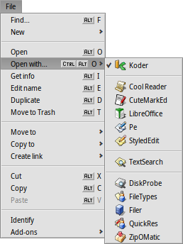
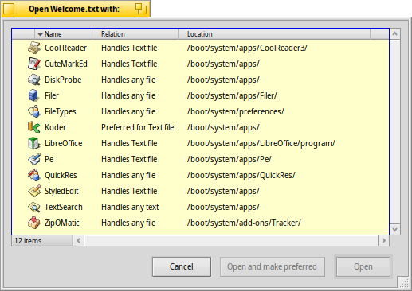

| Enhavtabelo |
|
Surmetado de volumoj Navigado Aspekto Agordo de la Spurilo Prilaboro de dosieroj Stato de agoj |
La Spurilo (Tracker)
La Spurilo estas grafika interfaco al ĉiuj viaj dosieroj. Ĝi permesas al vi krei novajn dosierojn kaj dosierujojn aŭ serĉi, lanĉi, nomŝamĝi, forigi kaj kopii ekzistantajn.
La Spurilo estas programo tute simila al ĉiuj aliaj (la labortablo kun ĝiaj piktogramoj fakte estas nur plenekrana fenestro de la Spurilo konstante montranta la specialan dosierujon), La Spurilo aperas kun ĉiuj ĝiaj fenestroj en listo de la Laborstrio, povas esti ĉesigita kaj restartigita. La plej simpla vojo ĉesigi kaj restartigi paneintan aŭ paraliziĝintan la Spurilon (aŭ eĉ la Labortstrion) estas uzi La Procezarobservilon.
 Surmetado de volumoj
Surmetado de volumoj
Por atingi entenon de fiksitaj diskoj, lumdiskoj, poŝmemoriloj k.t.p., vi devas komence surmeti volumojn por la sistemo ekuzis ilin. Vi povas fari tion per submenuo , kiun vi povas trovi en menuo de la Laborstrio aŭ de la Spurilo, per dekstra alklako sur ajna loko de la labortablo aŭ per dekstra alklako sur piktogramo de disko sur la labortablo.

Por eviti permanan surmetadon por ĉio necesa dum ĉiu praŝargo ekzistas speciala
.
La ekzempla agordo supre aŭtomate surmetos iun ajn konektitan/enmetitan memorilon kaj ankaŭ resurmetos ĉiuj antaŭe surmetitajn diskojn dum praŝargo.
Navigado
Duobla alklako al dosierujo dekomence implicas ke la Spurilo malfermos novan fenestron lasante malfermita la patran. Tio povas rapide superplenigi ekranon per la fenestroj.
Vi povas preventi tion premtenante OPCIKLAVON, kio aŭtomate fermos patran fenestron.
Tio funkcias ankaŭ dum klavara navigado. Pli detale legu en la ĉapitro Ŝparklavoj kaj klavkombinaĵoj.
Movado tra dosierujoj estas unu el ĉefaj celoj de la Spurilo, simile al dosieraj administriloj en aliaj sistemoj. La Spurilo de la Hajko havas kelkajn unikajn eblecojn helpantajn fari tion pli komforte.
Hierarkiaj falmenuoj
Anstataŭ duoble alklaki dosierujon por eniri suben ekzistas pli komforta rimedo - la hierarkia falmenuo:

Dekstra alklako sur dosierujo aperigas menuon kie la unua elemento estas falmenuo, kiu permesas navigi al subaj niveloj. Simple iru laŭ hierarkio ĝis necesa dosiero aŭ dosierujo kaj alklaku ĝin por uzi. Supra ekzemplo montras entenon de la dosierujo/boot/home/config/.
Se vi faros tion trenante dosieron, la dosiero estos movita en elektiton.
Vi povas uzi similan metodon en ajna fenestro de la Spurilo:

Alklaku suban maldekstran areon kun informo pri nombro de elementoj kaj aperos submenuo por ĉiuj niveloj ekde nuna loko. Tie vi povas kutime navigi.
Atentu, ke la labortablo ĉiam estas la plej supra nivelo kie la Spurilo montras surmetitajn volumojn. Do, se vi volas navigi en alian diskon komence navigu supron (labortablon).
Vi povas uzi saman submenuon trenante dosieron sur dosierujo. Se vi iom da tempon tenos trenatan dosieron sur dosierujo aperos submenuo per kiu vi povos elekti celon. Se treni dosieron per dekstra musbutono vi povos elekti agon inter kopii, movi aŭ ligiligi tuj kiam vi lasos la butonon.
Saltado al dosieroj per antaŭtajpado
Ŝajne vi konas eblecon de aliaj dosieradministriloj: tajpante komencajn literojn de la nomo vi tuj saltos al unua dosiero kiu komenciĝas per tiuj literoj. La Hajko disvolvis la ideon. Se forestas dosiero kun nomo komencanta per tiuj literoj vi saltos al unua dosiero kies nomo entenas la literojn ie ajn en la nomo. Aŭ eĉ se nomo ne entenas literojn la serĉado daŭros tra atributoj de doiseroj.

En supra ekzemplo multaj dosieroj komenciĝas per "Haiku logo", do tajpado de komencaj literoj estos senutila. Tamen en la Hajko vi povas tajpi "web" por salti al la dosiero "Haiku logo - website". Enigataj signoj aperas en suba maldekstra angulo, kie vi kutime vidas nombron de dosieroj en dosierujo. Kaj post sekundo la la informo en la kampo restaŭriĝos kaj vi povos ekserĉi denove.
Filtrado per antaŭtajpado
Anstataŭ salti dum tajpado vi ankaŭ povas filtri taŭgajn dosierojn - ĉiuj netaŭgaŭ dosieroj fariĝos nevideblaj. Tio povas efektivigi serĉadon precipe se dosieroj estas tre multnombraj. Por komenci filtradon aŭ dividi serĉajn ŝablonojn premu MAJUSKLIGKLAVON SPACON.
Diference de antaŭtajpa saltado la filtrado daŭros ĝis kiam vi ne presos ESKAPKLAVO aŭ ne fermos ĉi fenestron (aŭ ne ŝanĝos dosierujon, se vi uzas solfenestran navigadon).
Ŝalti antaŭtajpan filtradon vi povas en Agordo de la Spurilo.
Aspekto

Fenestroj de la Spurilo proponas tri reĝimojn de montrado per la menuo :
(ALTERNATIVKLAVO 1) - grandaj piktogramoj, kies gradon vi povas ŝanĝi per submenuo aŭ pliigi/malpliigi per ALTTERNATIVKLAVO +/-.
(ALTERNATIVKLAVO 2) - malgrandaj piktogramoj.
(ALTERNATIVKLAVO 3) - detala listo de dosieroj kaj ebleco montri/kaŝi aldonajn dosierajn indikojn (rigardu ĉapitron Atributoj).
La menuo proponas kelkajn aliajn funkciojn:
(ALTERNATIVKLAVO Y) - Adapti la fenestron al la plej taŭga grando.
- Submebuo, havebla nur en la vido kiel grandaj aŭ malgrandaj piktogramoj, kiu permesas ordigi sosieroj laŭ divesaj indikoj:
, , , , , , ,
- Rinversas direkton de ordigo
(ALTERNATIVKLAVO K) - Alkradigas ĉiujn piktogramojn al nevidebla krado. Kun premita MAJUSKLIGKLAVO en la submenuo aperas kiu aldone ordigos ĉiujn piktogramojn konkorde al antaŭ elektita regulo.
(MAJUSKLIGKLAVO ALTERNATIVKLAVO A) - Elektas dosierojn konkorde al regula esprimo.
(ALTERNATIVKLAVO W) - Fermas la fenestron. Kun premita MAJUSKLIGKLAVO en la menuo aperas kiu fermos ĉiujn fenestrojn de la Spurilo.
(ALTERNATIVKLAVO Q) - Fermas ĉiujn fenestrojn de la Spurilo ĉe aktuala laborspaco. Tio estas utila ŝparklavo se vi forgesis uzi OPCIKLAVON alklakante dosierujojn kaj ĉiuj fenestroj kun antaŭaj dosierujoj restas malfermitaj ĉe via flua laborspaco.
Iam vi volus reordigi nur kelkajn dosierojn sen plenumo de tuteca (per ALTERNATIVKLAVO K). Tiuokaze vi elektu deziratajn piktogramojn kaj trenu ilin al nova loko. Antaŭ ĵeti ilin tie premtenu ALTERNATIVKLAVON. Tio alkradigos la piktogramojn.
Aliaj funkcioj estas evidentaj.
Agordo de la Spurilo
malfermas panelon kun iom da opciojn kiuj estas aplikataj realtempe, do vi vidos ŝanĝojn tuj.
Tio estas:
- Decidu, ĉu ĉiuj surmetitaj volumoj aperu rekte sur labortablo aŭ ĉu estu sola piktogramo malfermanta la fenestron kun volumoj.
- Vi povas atribui kiam doubla alklako sur dosierujo ne malfermos ĝian apartan fenestron, sed montros ĝin en jama fenestro. Tio diferencas de malfermo kun premtenata OPCIKLAVO kiel estas priskribite antaŭe, ĉar tiel vi perdos konservitajn ekranlokiĝo kaj grando de koncerna dosierujon fenestro.

Antaŭ vi ŝanĝos reĝimon de la Spurilo al , ĉar ĝi estas pli kutima por vi, ni rekomendas komence provi navigadon per falmenuoj, ĉar ĝi estas pli rapida se vi alkutiniĝos. Tamen, navigado per sola fenestro proponas la Navigilon kie vi povas entajpi aŭ kopii & alglui itileron kaj uzi butonojn reen, antaŭen kaj supren.
Ŝaltinte vi povos filtri entenon de fenestroj de la Spurilo por vidi nur dosierojn kies nomoj aŭ indikoj taŭgas vian ĉenon. Rigardu supre.
- Atribuu koloron por nedeviga indikilo de liberspaco montrebla flanke de voluma piktogramo.
- Difinas kiam aŭtomate surmeti volumojn, kiel estas priskribite supre, en Surmetado de volumoj.
La agorda panelo estas alireble ankaŭ per La Spurilo (Tracker) el menuo de la Laborstrio.
Prilaboro de dosieroj
Preskaŭ ĉiuj agoj proponataj per la menuo por elektita dosiero estas ankaŭ proponataj per la kunteksta menuo, kiu aperas per dekstra alklako sur dosiero.
La komandoj estas evidentaj.
- por serĉi dosierojn aŭ dosierujojn.. Rigardu la ĉapitron Serĉmendoj por aldona informo.
- Kreas novan dosierujon aŭ iu ajn dosieron per ŝablono.

Elektinte vi trafos la dosierujon /boot/home/config/settings/Tracker/Tracker New Templates. Kreado de dosiero en ĉi dosierujo donos ŝablonon kun nomo, speco kaj aliaj indikoj por la menuo . La supra bildo montras ekzemplon: la dosiero kun nomo "text file" kaj la speco text/plain. Rigardu la ĉapitron Dosierspecoj por aldona informo.
- submenuo kun ĉiuj programoj kapablaj prilabori ĉi dosierspecon.
La preferata programo, kiu estos lanĉita per duobla alklako sur dosiero estas markita per bonmarko. Komence de submenuo lokiĝas programoj kiuj ĝuste kapablas prilabori la dosierspecon, la ekzemplo montras tekstan dosieron kun la speco text/plain. Poste lokiĝas programoj kapablaj prilabori superan specon, ĉi tie text/*. Lastaj programoj en la listo kapablas prilabori iun ajn dosieron. Se vi nenion elektos sed alklakos la menuon mem, do aperos la dialogo:
Ĉi tie vi ankaŭ povas trovi programojn menciitajn en la menuo. Vi povas elekti kaj presi la butonon por ŝanĝi preferatan programon por ĉiuj dosieroj kun la speco , en la ekzemplo kun text/plain.
-
Ĉi tio malfermas la panelon kiu montras metan datumon de dosiero kaj permesas redakti permesojn por ĝi. Ankaŭ vi povas ŝanĝi nomon per alklako al noma kampo supre.

La panelo havas tri langetojn:
- : Montras kutiman informon - grandon, daton de kreado/ŝanĝo, specon kaj lokiĝon. Alklako sur intinero mafermos doserujon entenantan la dosieron. Menuero atribuas preferatan programon por uzi same ĉi tiun dosieron.
- : Por ŝanĝi posedanton, grupon kaj uzpermesojn de la dosiero.
- : Listigas ĉiujn aldonajn atributojn de dosiero kaj ĝiajn valorojn kaj specojn.
, kaj - evidente.
, kaj - permesas por vi movi, kopii kaj ligigi elektita(j)n dosiero(j)n uzante falmenuan manieron navigi. Kun kunpremita MAJUSKLIGKLAVO la menuo permesas krei relativan ligilon.
, kaj - permesas por vi manipuli dosierojn uzante la tondujon. Se premteni MAJUSKLIGKLAVON dum ekuzo de la menuo vi povos da dosieroj, eventuale eĉ el aliaj dosierujoj, por poste alglui ilin ĉiujn kune. Ankaŭ kun premtenata MAJUSKLIGKLAVO vi povas alglui dosierojn el la tondujo kiel ligiloj.
- permesas rekoni specon de doseiro kaj atribui ĝin, sed ĝi ne estis atribuita antaŭe, ekzemple se vi ŝargis dosieron per la programo wget kiu ne atribuias dosierspecon. Kun MAJUSKLIGKLAVO dum ekuzo de la menuo vi havos por ripari misan specon.
- proponas apliki aldonaĵojn de la Spurilo, kiuj kapablas prilabori elektita(j)n dosiero(j)n. Rigardu la ĉapitron Aldonaĵoj de la Spurilo por aldona informo.
Stato de agoj
Kiam vi kopias, movas aŭ forigas dosierojn la Spurolo montras staton de la agoj per speciala fenestro. Se okazas pli ol unu ago, por ĉiu tasko estas propra stato.

Du dekstraj butonoj permesas paŭzi aŭ tute ĉesi la agojn. Tio povas utili dum amasaj agadoj. Por ekzemplo, vi bezonas urĝe lanĉi grandan programon. Tamen jam okazas kopiado de granda amplekso da datumo per kiu estas forte okupitaj viaj diskoj kaj tio prokrastos la lanĉadon - vi povas tempe paŭzi kopiadon.